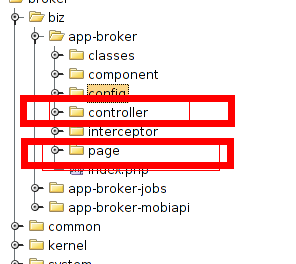
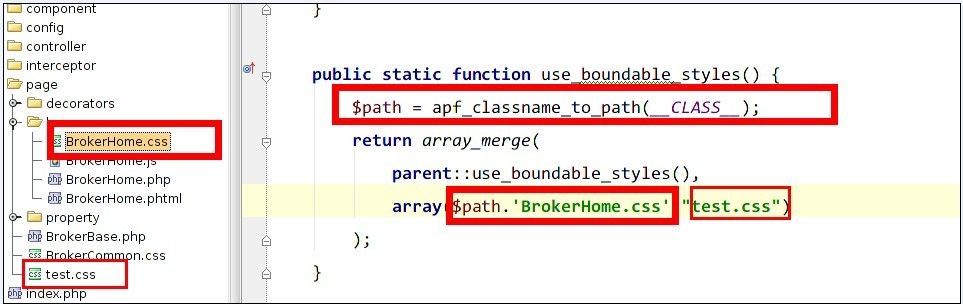
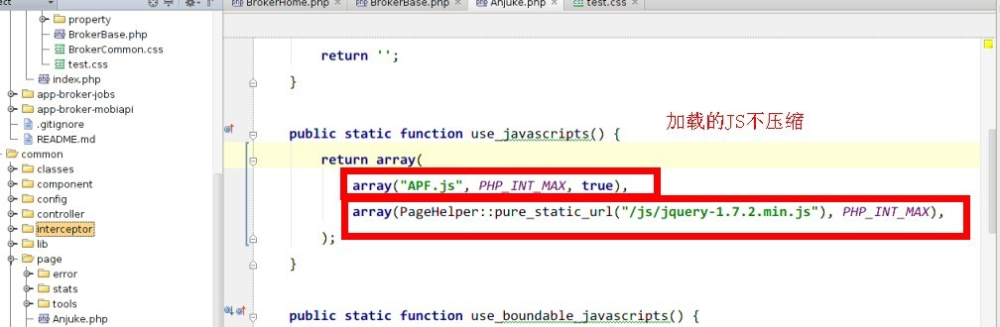
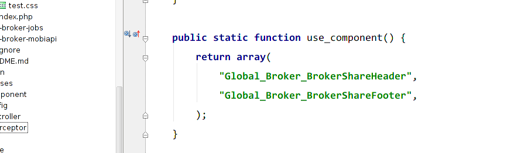
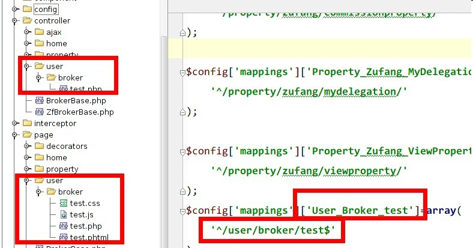
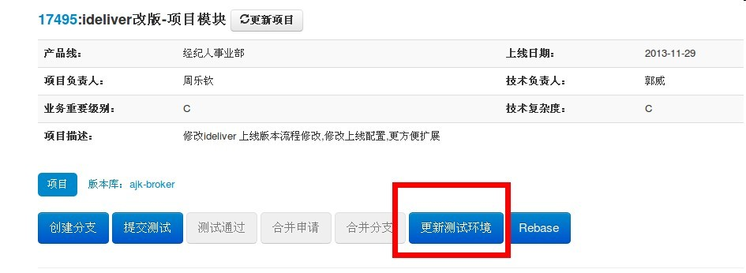

安居客的页面如何组合的?

神秘面纱:MVC是什么?


Page疑惑点
use_boundable_styles与use_styles
use_boundable_javascripts与use_javascripts
use_component
图片
CSS配置注意点
CSS中加载图片
引用自己的CSS
引用别人的CSS
use_boundable_styles与use_styles有什么区别
CSS如何配置(续)--CSS中加载图片
- 记住在CSS文件头部放入<\?php apf_require_class("PageHelper"); ?>
- 如何加载图片<\?php echo PageHelper::pure_static_url("/images/test.jpg");?>
- 静态资源(不变的)放在:http://projects.dev.anjuke.com/svn/sites/pages
CSS如何配置(续)--引用CSS
引用CSS主要记住路径就好了,为什么会有变量
$path

CSS如何配置(续)--CSS引入两种方法的区别
use_boundable_styles与use_styles有什么区别
- use_boundable_styles:把配置的多个CSS文件压缩成一个CSS文件减少HTTP请求和大小, 可能需要修改的
- use_styles:不对配置的CSS文件处理?好像没什么用这个方法
JS如何配置
引用自己的JS "pass"
引用别人的JS "pass"
use_boundable_javascripts与use_javascripts有什么区别
JS如何配置(续)--JS引入两种方法的区别
use_boundable_styles和use_styles,use_styles主要用于加载不在本地的JS文件,所以才不压缩的

Component CSS和JS如何配置
Component页面的JS和CSS往往没有加载,为什么?

静态资源如何修改
图片被缓存了,怎么办?
没办法，重命名
做一个独立的前端--写简单的php

在route.php添加路由规则
写Controller php
写page php
写page phtml css js
配置是不是很复杂
为什么框架把图片,CSS,JS配置搞的如此复杂?
测试环境

pgpmtxxx
pgbugxxx
my.anjuke.test
PG如何更新图片
仓库对应关系
- site/anjuke-broker与_ajkrepopool/anjuke_feature
- site/ajk-broker与_ajkrepopool/ajk_feature
- haozu/haozu-site与_ajkrepopool/haozu_feature
- jinpu/jinpu-site与_ajkrepopool/jinpu_feature
- anjuke/ajk-memdian与_ajkrepopool/memdian_feature
掌声在哪里!!!
The End

←
→
/
#